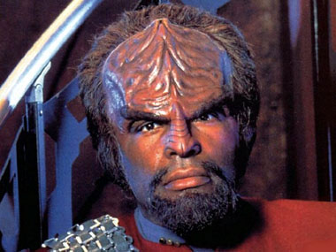
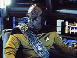
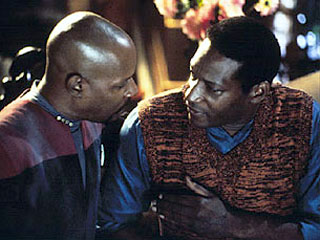
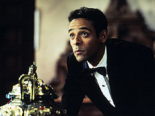
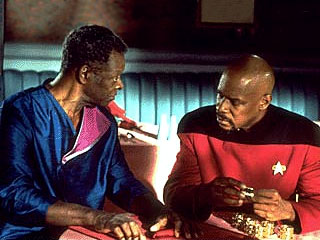
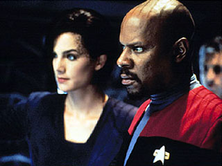
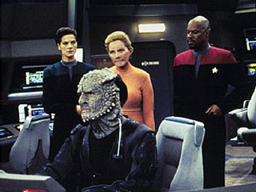
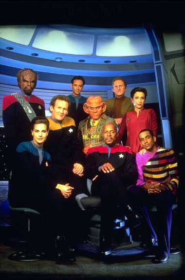

|
Que
entre o Klingon!
 Com
a chegada da edio em DVD da quarta temporada de Deep
Space Nine nos Estados Unidos nesta semana, torna-se oportuna
uma examinada dos episdios que compem tal pacote e cuja
distribuio (em qualquer forma) em terras brasileiras ainda
incerta (as demais trs temporadas da srie saem respectivamente
em outubro, novembro e dezembro deste ano na Amrica, uma
por ms, e todas tero oportunamente cobertura similar do
Trek Brasilis). Com
a chegada da edio em DVD da quarta temporada de Deep
Space Nine nos Estados Unidos nesta semana, torna-se oportuna
uma examinada dos episdios que compem tal pacote e cuja
distribuio (em qualquer forma) em terras brasileiras ainda
incerta (as demais trs temporadas da srie saem respectivamente
em outubro, novembro e dezembro deste ano na Amrica, uma
por ms, e todas tero oportunamente cobertura similar do
Trek Brasilis).
Este artigo apresenta um formato deveras simples, se dividindo
em uma primeira parte que dedicada s perguntas mais freqentemente
feitas sobre esta quarta temporada de DS9 (FAQ)
e uma segunda parte mais extensa, que trata da temporada,
episdio a episdio (incluindo spoilers!)
FAQ da quarta temporada de Deep Space Nine:
Por que Worf se juntou ao elenco
da DS9 (no primeiro episdio da quarta temporada, "The Way
of the Warrior")?
Os executivos da Paramount pediram, em uma reunio com os
produtores de DS9 antes do incio da quarta temporada,
por um elemento que viesse a trazer fs antigos para a srie
(mas eles no disseram absolutamente nada sobre qual elemento
seria este -- que a postura-padro dos executivos do estdio
nessas reunies). A Paramount iria vender os direitos das
reprises em syndication (cinco vezes por semana) ao
final da quarta temporada e queria "reenergizar" a srie para
conseguir um melhor preo no mercado.
Ira Behr foi para casa para tentar racionalizar o pedido em
algo que fosse possvel e criativamente interessante e consistente
com a srie at ento. Ele ento se lembrou de uma fala de
um Fundador (posando como o coronel Romulano Lovok), no episdio
"The Die is Cast",
da terceira temporada, que dizia que, aps aquele momento,
as nicas foras que poderiam fazer frente ao Dominion no
quadrante Alpha eram a Federao e o Imprio Klingon, e mesmo
essas duas foras no o seriam por muito tempo. Ira achou
que deveria dar prosseguimento a essa ameaa. Ronald D. Moore
gostou da idia, mas os dois no conseguiram bolar um jeito
de fazer tal coisa funcionar. Mais tarde foi que Behr conservou
com Berman a este respeito, que se mostrou bastante entusiasmado
e ainda sugeriu o nome de Worf. Behr foi meio ctico no incio,
mas acabou topando a idia j concebendo como seguir em cima
do entusiasmo de Berman (cujas contribuies prticas em termos
de histria so normalmente mnimas). Os executivos aprovaram
o conceito com louvor (eles tinham nmeros que apontavam que
audincia de Jornada costuma responder bem aos Klingons),
tanto que autorizaram um oramento extra, dando ares de um
virtual segundo piloto para o episdio duplo (telefilme) "The
Way of the Warrior".

Que o leitor entenda bem o que aconteceu. Behr no tinha a
menor inteno de seguir esta rota (ao menos no da forma
que foi feito - a "promessa" de "The
Die Is Cast" poderia ser "cumprida" de uma infinidade
de formas diferentes). Inicialmente, a terceira temporada
iria terminar e a quarta comear com um episdio duplo, cuja
histria acabou se tornando os episódios "Homefront"
e "Paradise Lost" desta quarta temporada. Depois, a
terceira temporada iria terminar com "The Adversary"
e a quarta comear com a mesma histria em duas partes. At
que finalmente a histria de parania envolvendo o Dominion
tomou o seu lugar de direito mais frente na temporada e
"The Way Of The Warrior" tomou forma.
Um ano e meio mais tarde, em uma nova reunio com os executivos
da Paramount, que Behr trouxe a idia de reformar a aliana
entre o Imprio e a Federao. Os "engravatados" no se opuseram,
uma vez que a presena Klingon no iria diminuir na srie
(eles s iriam mudar de lado). Somente ai Behr trouxe a srie
para o caminho que ele acreditava ser o mais correto. O mentor
de DS9 deu um verdadeiro show de jogo de cintura, tirando
o melhor de uma situao delicada, sempre se referindo a situao
de forma bem-humorada e com uma atitude deveras positiva.
Quais foram as outras mudanas introduzidas
na srie na quarta temporada?
Foram feitas diversas mudanas cosmticas na srie (muitas
delas anlogas a aquelas feitas no incio da terceira temporada
de A Nova Gerao). A abertura foi modificada para
incluir a Defiant e outros detalhes, como pequenos operrios
soldando o casco da estao em meio a uma nova verso do tema
musical principal do programa. Jadzia promovida a tenente
comandante, Bashir promovido a tenente (e Siddig El Fadil
muda o seu nome artstico para Alexander Siddig), O'Brien
recebe uma verdadeira insgnia de chefe de operaes e Kira
ganha um novo penteado e um novo uniforme, agora muito mais
delicado e feminino, incluindo at infames sapatos de salto.
Talvez a mais comentada mudana de aparncia tenha sido o
novo visual de Sisko, careca e com cavanhaque. Algo que foi
sem dvida muito positivo para Avery Brooks que assim se sente
muito mais vontade. Worf mudou para a diviso de comando
(uniforme vermelho) e assumiu a posio de "Oficial de Operaes
Estratgicas" de DS9 e de primeiro oficial da Defiant
(algo importante para uma utilizao mais racional da nave).
Quo boa esta quarta temporada?
Curioso que uma "sacudida" to extrema em uma srie no tenha
comprometido a sua integridade, e muito menos sua qualidade.
Esta quarta temporada a melhor de uma srie de Jornada
desde as duas primeiras da Srie Clssica e sua qualidade
sustentada, episdio a episdio, realmente digna de nota.
Vinte e trs episdios so pelo menos regulares e dos outros
trs, somente "The Muse" no traz absolutamente nenhuma
qualidade. A "mistura de histrias" que engloba humor, ao,
"ao de histria em quadrinhos", stira, pardia, drama,
filosofia, batalhas espaciais, fico cientfica e temas de
relevncia social se mostra vencedora e produzida com excelentes
valores de produo e um infinitamente soberbo elenco.
Ira Steven Behr manteve Robert Hewitt Wolfe, Ronald D. Moore
e Ren Echevarria a bordo da equipe de roteiristas. Behr trouxe
ainda, como escriba, Hans Beimler, seu velho conhecido de
outros carnavais (por exemplo, da terceira temporada de A
Nova Gerao, a melhor daquela srie). Com esta equipe,
e apesar da completa e abenoada ignorncia dos executivos
do estdio, Behr comeou a definitivamente deixar a marca
de sua viso pessoal sobre Jornada nos anais da franquia.
Alguns especularam que DS9 iria se transformar na "srie
do comandante Worf", o que nem de longe aconteceu. O robusto
modelo de legtima "srie de elenco" de DS9 foi capaz
de aceitar esta adio e distribuir os seus personagens em
"protagonistas de fato" e fazer com que carregassem
a grande "mistura de histrias" como desenvolvida. Outros
tantos especularam que DS9 se transformaria em uma srie de
"ao descerebrada" (o que "The Way Of The Warrior"
no de forma alguma, para comeo de conversa).
A exibio logo em seguida de "The Visitor" calou imediatamente
tal preocupao. O carter eminente "orientado a personagem"
da srie e o carinho dos realizadores por Sisko, Kira, Odo,
Garak e todos os demais, torna impossvel que tal coisa acontea
assim desta forma. Obviamente nem tudo so flores e a certeza
de Behr que o caminho de uma guerra total entre a Federao
e o Imprio Klingon no deveria ser trilhado pela srie, impede
a criao de um bvio arco global de histria neste sentido,
mas fincando o p na noo de que o Dominion estava por trs
de tais conflitos entre as duas maiores potncias do Quadrante
Alfa o tempo todo e que ele era o real inimigo, permitiu que
a srie voltasse ao seu eixo e mantivesse a sua consistncia
interna. A verdade sobre os acontecimentos de "The Way
of the Warrior" comearia a vir tona no primeiro episdio
da quinta temporada, "Apocalypse Rising".
A Temporada, Episdio a episdio
"The Way Of The Warrior I & II" (****)
 Com
a crescente parania Klingon com relao ao Dominion, uma
enorme fora tarefa Imperial estaciona em DS9, apesar
do seu comandante, general Martok (J. G. Hertzler, fazendo
sua estria com o seu personagem definitivo na srie), se
negar a dizer ao capito Sisko, onde iro atacar. Preocupado,
Sisko recruta o comandante Worf para que ele possa usar todos
os seus contatos remanescentes com os do seu povo para tentar
descobrir algo. O filho de Mogh vislumbra finalmente ento,
que as instabilidades polticas e o recente fechamento das
fronteiras de Cardassia apontam, segundo os Klingons, para
uma infiltrao dos Fundadores naquele governo, algo que o
chanceler Gowron no pode permitir. Cardassia enfrenta os
seus prprios problemas em meio a um golpe de estado civil.
A Federao condena formalmente a invaso de Cardassia pelos
Klingons, suspendendo anos de boas relaes diplomticas entre
os dois povos. Sisko realiza um miraculoso salvamento do corpo
governante Cardassiano que se refugia em DS9. As foras
de Gowron atacam e a estao, armada at os dentes para enfrentar
um ataque do Dominion, resiste bravamente, mesmo a vrias
tropas de abordagem Klingon. Com tamanha resistncia e os
reforos Federados mais prximos, Gowron bate em retirada,
apesar de no libertar os territrios j anexados em sua campanha.
Worf vitima de uma espcie de crise existencial desde a destruio
da Enterprise - D e agora novamente mal visto no Imprio por
ter se voltado contra a deciso de Gowron de atacar Cardassia
e depois DS9, decide ficar na estao a pedido de Sisko.
verdade que os desdobramentos polticos acontecem aqui de
forma mais rpida do que teriam qualquer direito de assim
o fazer e a nsia de combate de Gowron se apresenta mais como
uma necessidade da trama, para termos o mximo de ao possvel,
do que qualquer outra coisa, mas isto de forma alguma empana
o imenso valor de entretenimento deste ambicioso segmento,
que traz em seu bojo as usuais brilhantes caracterizaes
de DS9 e uma trama poltica que (a menos de sua comprimida
escala de tempo) se mostra sempre interessante e factvel.
Os valores de produo so excelentes e as atuaes da maioria
dos atores envolvidos so realmente excepcionais, absorvendo
e envolvendo o espectador do comeo ao fim.
A ressonncia pessoal do episdio cai finalmente nos ombros
de Worf, retomando temas caros para esta srie desde o seu
piloto, como a perda de propsito na vida, trazido tona
quando Sisko lembra ao Klingon do seu dilema pessoal de deixar
ou no a Frota Estelar quando da perda de sua esposa. Uma
honesta conversa acaba convencendo Worf a ficar em DS9,
onde ele se tornaria to integral quanto "navezinha valente"
que ele por tantas vezes iria acabar comandando.
"The Visitor" (****)
Poucas experincias so to marcantes para o ser humano quanto
perder algum amado e aprender a lidar com esta perda. Pensar
ter visto este algum na multido, no querer dar prosseguimento
a sua vida por achar que est traindo aquela pessoa ausente,
que a est esquecendo, sozinha, em "algum lugar". Estes so
alguns dos sentimentos comuns a todos aqueles que passaram
pela perda de um ente querido.
Quando DS9 resolveu tratar de tal experincia no poderia
ter feito uma escolha mais acertada do que utilizar talvez
a relao mais verdadeira de todo a franquia de Jornada
nas Estrelas: o elo que existe entre Ben Sisko e Jake
Sisko. Em "The Visitor", Jake vivencia e tem de lidar
com a morte de seu pai. Este segmento considerado por muitos
fs como o episdio mais emocionante de qualquer Jornada
e muito comum a sua audincia chorar durante a sua exibio.
O episdio apresenta, no futuro, o "velho Jake Sisko" (Tony
Todd, que antes disto j havia vivido Kurn, irmo de Worf,
em A Nova Gerao) contando, em sua casa em Louisiana,
a histria de sua vida a uma jovem aspirante a escritora,
de nome Melanie (Rachel Robinson, filha de Andrew Robinson,
o Garak). "Jake" lembra de como, no presente do episdio,
ele perdeu o seu pai, que literalmente desapareceu em um acidente
na Engenharia da Defiant, enquanto a nave estava na vizinhana
da Fenda Espacial. Porm, com o passar dos anos, Ben reaparecia
brevemente para seu filho, de tempos em tempos, no importando
se Jake estivesse em DS9, na terra ou em outro lugar.

O escritor aposentado narra como a sua obsesso de trazer
seu pai de volta do lugar em que ele ficou preso, o fez perder
a sua esposa, sua carreira de escritor e ir levar a sua vida.
Ele explica a Melanie que Ben em breve ir fazer uma nova
"visita" e que ele chegou a concluso (aps anos de estudo)
de que a nica forma de restaurar a vida de seu pai cortar
o elo entre eles (ou seja, se matar) quando eles dois estiveram
juntos. Melanie agradece por tudo e parte, o "velho Jake"
toma a ltima dose da droga.
Ele pega a bola de beisebol de Ben (o smbolo maior da presena
do personagem) e espera. Ben chega e fica devastado por saber
que Jake decidiu se matar, seu filho diz que ele faz isto
por ele e pelo menino que um dia ele foi e morre nos braos
do pai, em um dos maiores e melhores momentos da histria
de DS9 e de Jornada nas Estrelas.
De volta ao presente, Ben tem um 'insight' e consegue
se desviar a tempo e evita o acidente, ele abraa Jake com
a voz embargada e diz que est tudo bem agora.
"The Visitor" consegue ser um episdio que, mesmo tendo
um formal (e inevitvel) "reset - button", apresenta
uma ressonncia emocional devastadora e simultaneamente no
parece nem um pouco manipulativo (a sinceridade da atitude
do episdio e desconcertante), mesmo com Todd chorando quase
o tempo todo, algo que s o termo: "mgica" parece poder explicar.
O episdio imortalizou falas triviais como "obrigado por tudo"
e "tudo vai ficar bem", dentre as mais inesquecveis de Jornada.
Os maiores elogios possveis a todos os envolvidos, especialmente
para: o mestre da caracterizao Ren Echevarria por ter transformado
(de forma no creditada) o primeiro rascunho de roteiro de
Michael Taylor em uma obra-prima, David Livingston por sua
direo absolutamente virtuosa, Dennis McCarthy pelo melhor
tema musical da histria da franquia e Tony Todd pela infinitamente
emocionante caracterizao do "Velho Jake Sisko".
Alguns gostam de pensar que Ben Sisko no reteve nenhuma lembrana
do que aconteceu ao final do episdio, um ponto recorrente
de discusso entre os fs. Preferem entender que em nossas
vidas, quando atravessamos a rua e vem um carro em alta velocidade
em nossa direo e "alguma coisa" nos avisa do perigo e nos
faz desviar por que existe algum no universo que nos ama
tanto, que seria capaz de morrer por ns.
Outros preferem pensar que Sisko reteve sim as lembranas
de tudo que aconteceu, sendo exatamente por isto que no se
despediu de seu filho em "What you Leave Behind" (episdio
final da srie e que possui vrios "ecos" de "The Visitor"),
justamente com medo de dar inicio a uma obsesso como a descrita
aqui. Seja como for, poucos iro duvidar que este o melhor
episdio desta quarta temporada, um dos melhores da srie
e um dos melhores de Jornada de todos os tempos. Clssico!
"Hippocratic Oath" (***)
Bashir e O'Brien so capturados e obrigados a trabalhar
numa forma de libertar da dependncia do Ketracel White a
tropa do Jem'Hadar Goran'Agar (Scott MacDonald), que naturalmente
se livrou de tal dependncia naquele planeta do Quadrante
Gama. Bashir fica to impressionado pela conduta de Goran'Agar,
livre do White, que passa a trabalhar com afinco em um cura,
que ele agora acredita que possa significar um golpe decisivo
no Dominion. O'Brien no acredita nisto e se recusa a ajudar,
obrigando Bashir a ordenar que o chefe o ajude. Em ltima
instncia, o Engenheiro desobedece e destri o trabalho do
mdico, selando o destino de Goran'Agar. Ele manda os dois
Federados partirem o quanto antes e permanece no planeta,
para matar um a um os seus soldados de uma maneira honrada.
Antes que a falta do White os leve a loucura e a uma morte
horrvel. O conflito entre os dois maiores amigos da srie
crvel e de acordo com a essncia de ambos os personagens
e Goran'Agar traz uma bem vinda dose de profundidade aos da
sua espcie.
Uma histria secundria na estao, em que vemos Worf tentar
reviver os seus tempos de oficial de segurana a bordo da
Enterprise-D e acabar entrando em conflito com os mtodos
do comissrio Odo, bastante relevante a respeito da adaptao
do Klingon vida em DS9.
"Indiscretion" (**1/2)
Kira e Dukat se unem para investigar uma h muito tempo desaparecida
nave Cardassiana de prisioneiros Bajorianos. Kira tem um interesse
pessoal no caso, e no a nica, pois Dukat acaba revelando
que uma filha sua bastarda e mestia Bajoriana e Cardassiana
de nome Tora Zyial estava a bordo do transporte e tudo indica
que esteja agora em uma mina Breen, bem prxima. A major acaba
convencendo Dukat a no matar a jovem (que seria sua nica
chance de preservar a honra pessoal de volta terra natal)
e ajuda Dukat a resgatar Zyial. Dukat acaba decidindo leva-la
para casa, acontea o que acontecer. A promissora dupla formada
por Kira e Dukat decepciona aps um incio bastante bom. Esta
interao d lugar a uma trama que clama pela conscincia
de Dukat, que se torna bastante previsvel, apesar da curiosa
direo que ela ponta para o Cardassiano. Uma constrangedora
cena de alvio cmico em que Dukat fura o traseiro sentando
em um cacto e em seguida passa um dispositivo mdico na regio
em meio as suas risadas e as de Kira enquanto a cmera d
closes em suas ndegas absolutamente constrangedora e fere
muito ao episdio.
Uma absolutamente inofensiva histria secundria na estao
nos apresenta as reaes de Ben Sisko ao fato da capit Yates
agora ter uma residncia permanente a bordo da estao, Esta
parte funciona melhor do que tem qualquer direito de assim
faze-lo, ancorada na repetio de um infame "Isto um grande
passo", pela maioria dos envolvidos.
"Rejoined" (***)
 Uma
cientista Trill, doutora Lenara Kahn (Susanna Thompson), vem
a bordo da estao para testar uma nova teoria sobre a formao
de Fendas Espaciais artificiais. Dax e Kahn j foram casados,
ou melhor, Torias Dax e Linale Kahn j foram casados, tendo
Torias deixado Linale, viva. Os dois simbiontes se encontram
de novo depois de tanto tempo e eles ainda se amam, s que
a sociedade Trill observa um tabu que impede a "reassociao",
ou seja, retomar relaes intimas deste tipo. O episdio
em ltima instncia sobre o que as duas fazem a respeito do
seu amor. Lenara, ao contrrio de Jadzia, no consegue se
ver arcando com conseqncias de uma "reassociao" (que normalmente
acarreta o exlio do Trill) e deixa a estao, terminando
o caso antes dele comear. Uma
cientista Trill, doutora Lenara Kahn (Susanna Thompson), vem
a bordo da estao para testar uma nova teoria sobre a formao
de Fendas Espaciais artificiais. Dax e Kahn j foram casados,
ou melhor, Torias Dax e Linale Kahn j foram casados, tendo
Torias deixado Linale, viva. Os dois simbiontes se encontram
de novo depois de tanto tempo e eles ainda se amam, s que
a sociedade Trill observa um tabu que impede a "reassociao",
ou seja, retomar relaes intimas deste tipo. O episdio
em ltima instncia sobre o que as duas fazem a respeito do
seu amor. Lenara, ao contrrio de Jadzia, no consegue se
ver arcando com conseqncias de uma "reassociao" (que normalmente
acarreta o exlio do Trill) e deixa a estao, terminando
o caso antes dele comear.
Aqui temos uma pequena histria de amor, que trata de idias
e duras decises, mas nunca deixa de ser uma histria de amor.
de uma elegncia admirvel como o segmento em nenhum momento
sequer insinua a questo do mesmo sexo dos dois hospedeiros.
O famoso "beijo" entre as duas apenas serve para colocar em
foco o tabu dos Trills e mesmo assim acaba o examinando por
diversos ngulos, providos por diferentes personagens. Um
trabalho de classe dos envolvidos.
"Little Green Men" (***)
Finalmente, Jornada nas Estrelas ofereceu a sua prpria
verso dos "eventos" de 1947, em Roswell, Novo Mxico.
Segundo Behr e cia. os "aliengenas que caram na Terra" naquele
tempo e lugar foram na realidade os nossos velhos conhecidos
Ferengis Rom, Nog e Quark. Rumando para a Terra para levar
Nog para o seu primeiro dia na Academia da Frota Estelar,
eles so vtimas de sabotagem, lanados acidentalmente no
passado e presos para exame pelo exrcito Americano (os militares
os confundem com Marcianos, vejam s). "Little Green Men"
um bom episdio que faz graa com (aparentemente) todos
os filmes do gnero. Isso sem falar nos clichs da prpria
Jornada, como o sempre mgico tradutor universal e
as privadas que ningum nunca v. Sem contar que a nave de
Quark guardada no infinitamente infame "Hangar 18" pelos
militares. Infelizmente o segmento perde o gs no final, no
conseguindo fugir das limitaes do "high concept"
que lhe deu origem, mas ainda assim constitui uma agradvel
e curiosa hora de diverso.
"Starship Down" (***)
A Defiant visita o Quadrante Gama para renegociar um acordo
de comrcio (intermediado pelos Ferengis) entre os Karemma
(ver "Rules Of Acquisition"
da segunda temporada) e a Federao. Obviamente o Dominion
no est feliz com isto e manda uma patrulha Jem'Hadar. O
ataque inicial deixa a Defiant seriamente avariada em rbita
e no interior da atmosfera de uma gigante gasosa. O grosso
do episdio se desenrola ento como em uma juno de pelo
menos quatro filmes catstrofe:
- Na ponte, temos Kira tentando manter um seriamente ferido
Sisko consciente para que ele no caia em um coma. A interao
entre Kira e Sisko uma espcie de continuao do que foi
visto em "Destiny"
da terceira temporada, no sentido de tratar de como a major
lida com o fato de trabalhar para o Avatar de sua religio.
Com bons resultados, mas com poucas novidades em relao ao
que j havia sido feito sobre o tema.
- Por outro lado, uma tentativa de resgate de Bashir, acaba
colocando o mdico em um compartimento sozinho com Jadzia.
De longe parte mais "fofinha" do episdio ver os dois esquentando
um ao outro. Inofensivo e neutro material.
- Quark, por sua vez, serve de alvio cmico, sozinho ao lado
do representante Karemma Hanok (James Cromwell, que depois
viveria Zefram Cochrane no filme "Primeiro Contato")
e ainda, com a ajuda do aliengena, tem que desarmar um torpedo
que no detonou e ficou alojado no casco da nave. O que funciona
nos dois sentidos.
- E finalmente Worf tem a sua primeira chance no comando (e
mostra claramente o quanto ele tem para aprender, algo que
usado em proveito da histria), e da engenharia da Defiant
consegue derrotar os remanescentes Jem'Hadar e salvar a nave
Karemma.
Ver Worf se ajustar a trabalhar somente com engenheiros
bastante interessante e a experincia de O'Brien posta para
bom uso. Em suma, um episdio que ganha poucos pontos pelo
grau de manufatura embutido em sua histria, mas que funciona
de alguma forma por apresentar um tecnicamente impecvel rodzio
(atravs de suas quatro disjuntas histrias) entre todos os
principais elementos que costumam compor um bom thriller.
S faltando integrá-los em uma nica e coerente histria.
"The Sword Of Kahless" (**1/2)
Mais de mil anos atrs, o mundo natal Klingon foi pilhado
e muito dos seus mais preciosos tesouros foram levados. Entre
eles o Bat'leth de Kahless, a arma pessoal do seu mais reverenciado
guerreiro. Reza a lenda que tal artefato ser achado um dia
e que o seu possuidor ento trar a unio para o Imprio.
O Klingon Kor (ver "Errand Of Mercy" da Srie Clssica
e "Blood Oath"
da segunda temporada de DS9) descobre uma pista do
paradeiro da relquia e recruta Dax e Worf (cuja ajuda pode
trazer dividendos polticos para a Federao e para Worf)
em uma expedio que segue a bordo de um explorador.
Eles conseguem encontrar o Bat'leth com certa facilidade em
uma escavao Vulcana, mas Toral Duras (ver "Redemption"
de A Nova Gerao) tem outros planos para o objeto
e os persegue no subterrneo do local e interfere em seu transporte
e em suas comunicaes para evitar que fujam.
A presena de John Colicos sempre bem vinda em qualquer
episdio e o tom "maior que a vida" que ele traz a cada cena
combina perfeitamente com o presente segmento. Os Klingons
em geral de fato se adequam melhor a um contexto pico como
o retratado em "The Sword Of Kahless". Existe uma bem
vinda dose de continuidade com respeito vida de Worf e um
saudvel aprofundamento na mitologia Klingon.
Infelizmente, o carter pico da aventura no se realiza completamente
devido s restries oramentrias de sua produo. A grandiosidade
dos discursos acaba cansando e caindo no terreno da exposio
e as cenas nas cavernas tornam-se rapidamente repetitivas
(mesmo algumas falhas de direo so aparentes). Ao final,
uma interessante noo implcita de que a espada tem alguma
espcie de "feitio" que afeta tanto Worf quanto Kor (que
chegam as vias de fato, cada um j acreditando ser o mais
indicado para governar o Imprio, e so tonteados por Dax,
aps os trs terem derrotado Duras e cia.), justifica que
a arma seja novamente abandonada, agora no espao, para evitar,
curiosamente ao contrrio do que diz a lenda, uma guerra civil
no Imprio.
"Our Man Bashir" (***1/2)
"Our Man Bashir" uma excelente stira aos filmes de
espionagem em geral (tambm os de James Bond, mas no somente
os de James Bond) que acaba por transcender esta premissa
e oferecer algumas verdades sobre o relacionamento de Bashir
e Garak, o qual se modifica aps os eventos descritos no episdio.

Pouco depois de Bashir encontrar Garak bisbilhotando em uma
sesso privada do seu holoprograma de "James Bond", os dois
se assustam ao descobrir que (devido a um bizarro acidente
de transporte) a maior parte da tripulao tem os seus padres
de transporte agora literalmente "incorporados" aos personagens
do programa.
Bashir no pode simplesmente desligar a holosuite (cujos protocolos
de segurana se encontram obviamente desabilitados) com o
risco de perder todos os seus companheiros. A aventura uma
das mais bem produzidas da histria de Jornada, com
um interessante e coerente final e as "verses niners do universo
da espionagem" so bastante adequadas (ou seja, MUITO exageradas
e caricaturais): Kira Nerys como a coronel russa Anastasia
Komononov (com direito a sotaque e tudo), Miles Edward O'Brien
como o caolho Falcon, Jadzia Dax como a (tmida e irresistvel)
professora Honey Bare, Worf como o fiel valete Duchamps e
Benjamin Sisko ( claro) como (o super-vilo maligno que quer
dominar o mundo) dr. Hippocratus Noah.
"Homefront I" (****)
Um ataque bomba perpetrado por um transmorfo na Terra.
O antigo mentor de Ben Sisko, almirante Leyton (Robert Foxworth),
o chama de volta a sede da Frota Estelar e o nomeia responsvel
pela segurana do planeta, com funo primria de tornar mais
eficientes as medidas de deteco de transmorfos em todo o
globo. O capito trabalha pesado com Odo com este objetivo
enquanto passa seu tempo livre com Jake e seu pai Joseph Sisko
(Brock Peters) no restaurante da famlia em Nova Orleans.
Nog tambm costuma aparecer no restaurante e diz a Sisko que,
apesar de estar se saindo bem na Academia, ainda tem alguns
problemas de integrao e esta de olho em uma vaga em um esquadro
de elite denominado de "Red Squad".
Temos aqui um brilhante conto sobre parania que mostra DS9
em seu melhor enquanto srie de drama: temas relevantes
e importantes para srie com um todo (este o primeiro episdio
a realmente tratar da "promessa" de "The Adversary":
" muito tarde, j estamos em todo lugar"), com complexas
e crveis caracterizaes.

O pai de Sisko um personagem simplesmente maravilhoso que
serve a preciosa funo de ser o representante do "cidado
comum" em meio a crescente parania. Tal papel claramente
demonstrado nas duas principais cenas do segmento:
- Em primeiro lugar, Sisko, ao saber da presena de um transmorfo
se passando pelo prprio Leyton, tem que aumentar bastante
a segurana. O que leva a uma cena em que um oficial da Frota
enviado para coletar o sangue de Joseph, que se recusa terminantemente
a permiti-lo e acaba por acidente se cortando e Ben Sisko
(e a prpria audincia) ficam na expectativa (quase que uma
certeza) que de fato ele era um Fundador. Algo que no se
confirma, tornando de forma realmente clara, pela primeira
vez na srie, a real ameaa representada pelo Dominion.
- Mais tarde, ocorre um apagão mundial (tudo indicando
ser obra de uma sabotagem do Dominion da grade de fora planetria),
que leva o presidente da Federao a declarar um estado de
emergncia, colocando literalmente as tropas na rua e impondo
testes de sangue aleatrios a populao civil (Sisko deixou
DS9, quando eram observados inexplicveis aberturas
e fechamentos da Fenda Espacial, o que alguns acreditavam,
sem provas, ser uma frota camuflada de invaso dos Jem'Hadar).
Isto leva a uma segunda cena em que Joseph e Jake observam
as tropas sendo transportadas, ocupando as ruas do "Paraso".
A menos das restries oramentrias que ferem o escopo de
algo to grande como o que proposto no segmento, ele irretocvel.
Clssico!
"Paradise Lost II" (***)
A ameaa de um ataque dos Jem'Hadar a Terra se mostra uma
ameaa muito mais prxima. Foi o almirante Leyton que planejou
o apagãot mundial (e uma conspirao incluindo os detalhes
que apontavam para um ataque do Dominion) de forma a conseguir
a declarao de um estado de emergncia na Terra e conseguir
impor as medidas que ele julgava corretas para preparar o
planeta para uma possvel invaso. Um golpe de estado na Terra
est prximo. Enquanto Sisko pensa em como lidar com Leyton
ele se espanta ao encontrar o chefe O'Brien na Terra, s para
em seguida reconhece-lo como um Fundador, que diz ao capito
que existem somente quatro deles na Terra neste momento e
estes quatro foram suficientes para provocar tamanha crise
e tambm que o medo que os humanos sentem ser a sua runa.
Incapaz antecipadamente de cumprir a "promessa" da primeira
parte, esta concluso ainda assim navega em guas por demais
rotineiras.
Obviamente um ataque do Dominion nos termos sugeridos em "Homefront"
nunca iria acontecer, a alternativa dada interessante, mas
ela acaba desaparecendo rpido demais e de uma fora previsvel
demais. Sem a fora da trama envolvendo a parania do Dominion
da primeira parte, problemas logsticos e de escopo se tornam
mais aparentes tambm. No existe nada genuinamente errado
com o segmento, mas ele decepciona, especialmente por que
a ameaa intrnseca dos Fundadores nunca foi capturada de
forma to cristalina desde ento.
"Crossfire" (**1/2)
Este episdio (apesar do curioso ttulo, que mais parece
o de um "episdio de ao") tem por claro objetivo retomar
a linha de histria que diz que "Odo ama Kira secretamente"
e resolvê-la em um certo sentido.
O primeiro ministro Shakaar (ver episdio "Shakaar"
da terceira temporada) vem estao para discutir detalhes
da entrada de Bajor na Federao (o que acaba no se desenvolvendo
no episdio). Uma suspeita de assassinato transforma Odo em
seu guarda-costas e coloca o comissrio no meio de uma crescente
atrao entre Kira e Shakaar. O pobre comissrio passa por
todas as possveis situaes constrangedoras nesta posio:
perguntado por Shakaar sobre as possibilidades dele ter
algo com a major, ouve Kira falar sobre o ex-colega da resistncia
se tornando "algo mais" e chega a passar uma noite a porta
do quarto em que tal unio consumada.
Definitivamente um episdio sobre o comissrio (o ngulo da
tentativa de assassinato resolvido de forma discreta antes
do final do episdio), o segmento funciona devido ao talento
de Ren Auberjonois em expressar toda a angustia do seu personagem,
cena aps cena. No clmax do episdio, chegando ao seu limite,
Odo comea a destruir os seus prprios aposentos e em um muito
inspirado "improviso" de Auberjonois, que despenteia o cabelo
do personagem, captura de forma brilhante toda a sua confuso.
Odo interrompido por Quark que lhe oferece alguns sinceros
conselhos disfarados na sua habitual sede por lucros, que
ajuda o comissrio e recobrar o juzo e tratar de sua interao
com Kira de uma forma bem mais distante e profissional no
futuro. Apesar da dvida se este tipo material deveria cobrir
todo um episdio ou no (muito provavelmente a produo precisava
poupar algum dinheiro neste momento da temporada), fica difcil
no simpatizar com Odo ou admirar o talento do seu intrprete.
"Return To Grace" (***)
Como resultado de ter voltado a Cardassia com Zyial e a ter
assumido como filha, Dukat caiu em desgraa, lhe restando
apenas o comando de um velho cargueiro caindo aos pedaos.
Dukat que transporta a major Kira Nerys para uma conferncia
envolvendo Bajorianos, Cardassianos e Aliados. O local do
encontro encontrado destrudo. Responsveis: Klingons!
O Cardassiano e a Bajoriana se vêem novamente trabalhando
com um objetivo em comum e graas brutalidade do primeiro
e a engenhosidade da segunda conseguem tomar a ave de rapina
responsvel pelo ataque (com direito a um truque de transporte
bem similar ao usado por Kirk em "Jornada Nas Estrelas
III: À Procura De Spock"). Kira consegue convencer
Dukat a deixar Zyial com ela na estao, segura, enquanto
ele luta com os Klingons em sua nave solitria.
A interao entre Dukat e Kira funciona de forma mais convincente
aqui do que em "Indiscretion" e as conseqncias do
salvamento de Zyial por parte de Dukat so bastante interessantes,
colocando o Cardassiano em um completamente diferente contexto.
Marc Alaimo novamente extrai o mximo de simpatia da situao,
mas sempre deixando uma dvida (ou um aviso?) sobre a ndole
do Cardassiano para a audincia. Fica no ar o que Dukat realmente
tenciona alcanar com a sua deciso final, mas a noo do
militar como o "ltimo Cardassiano com esprito de luta intacto"
bastante interessante, com o romantismo sempre se ajustando
bem ao ex-comandante de Terok Nor. (O episdio tambm marca
a estria do personagem Cardassiano Damar (Casey Biggs), inicialmente
o brao direito de Dukat, que se tornaria muito importante
ao final da srie.)
"Sons Of Mogh" (***)
Devido deciso de Worf de no se aliar a Gowron em "The
Way Of The Warrior", o chanceler Klingon retalia colocando
a casa de Mogh e todos os seus membros em completa desgraa.
Sem lugar no Imprio, Kurn (Tony Todd), irmo de Worf, vem
estao para que o mais velho da famlia possa lhe oferecer
uma morte ritual com honra (uma vez que o suicdio no uma
opo para um Klingon).
Worf assim o faz, mas Dax percebe o que est acontecendo a
tempo e um transporte de emergncia para a enfermaria salva
Kurn. Sisko d em seguida a maior bronca da histria da Franquia
em Worf e Dax. O ritual no mais uma opo, PONTO!
O episdio no mostra qualquer maior conseqncia poltica
para o fim da aliana entre a Federao e o Imprio Klingon,
mas as conseqncias individuais para os "filhos de Mogh"
so devastadoras. Kurn acaba no funcionando como oficial
de segurana da estao devido a um crescente desejo de morrer
e durante uma pequena misso voluntria dos dois (para tentar
obter dados sobre um campo minado que os Klingons esto estabelecendo
prximo estao), Worf acaba por questionar o quanto Klingon
ele ainda e o quo humano ele nega ter se tornado.
Em um ltimo momento, Worf toma a deciso (extremamente controversa,
alm do episdio no indicar por que tal coisa diferente
de um suicdio sob o ponto de vista de Kurn) de ter as memrias,
personalidade e mesmo aparncia fsica de Kurn modificadas
para que ele possa viver uma outra vida em uma famlia amiga
de longa data, sem nunca se lembrar da vida que teve um dia.
Worf agora tem certeza que enquanto Gowron viver ele no ser
bem vindo no Imprio e que a casa de Mogh apenas existe agora
no smbolo que ele ainda teima em usar. O que lhe restou para
se manter funcional foi apenas o uniforme da Frota, que ter
que bastar.
Definitivamente no a mais original histria para Worf (visto
o que ele j passou), mas uma que tem algo a dizer ainda assim.
"Bar Association" (*)
Neste segmento, Rom promove uma greve dos funcionrios do
Quark's, com direito a piquete na porta do estabelecimento
e tudo mais. Obviamente isso contra a lei Ferengi, e Quark,
na iminncia de perder tudo, faz um acordo "por debaixo do
panos" com Rom de forma a ficar bem perante as autoridades
do seu povo. Ao final, todos os funcionrios voltam ao trabalho
com suas exigncias secretamente atendidas, exceto Rom, que
acaba indo trabalhar na equipe de manuteno da estao (um
desenvolvimento muito importante para o personagem, apesar
de acontecer em um fraco episdio como um todo). Esta mais
uma "tpica comdia Ferengi" que usa uma simplista histria
(at com algum valor em tese), como mera desculpa para disparar
as suas infames 'gags'. Uma das poucas cenas realmente engraadas
aquela em que Quark tenta utilizar garons hologrficos
no bar para substituir a sua equipe. Realmente hilrio. (O
que realmente irnico no episdio que Armin Shimerman,
o ator que representa o Quark, tem sido muito ativo na direo
de sindicatos durante toda a sua vida profissional). Em uma
pequena histria secundria Worf se muda para a Defiant.
"Accession" (***1/2) Uma antiga nave solar Bajoriana
emerge da Fenda Espacial, e em seu interior traz um poeta
Bajoriano de nome Akorem Laan. Akoren fora dado como morto
cerca de 300 anos atrs, ele na realidade foi salvo da morte
certa pelos Profetas, curado e enviado por alguma razo ao
presente. Um vedek fundamentalista de nome Porta o sada como
o verdadeiro "Emissrio", uma vez que ele contatou os Profetas
antes de Ben Sisko. Sisko abre mo do seu papel como cone
religioso dos Bajorianos, algo que sempre quis fazer e que
agora parece justificado, pois Akorem parece mais adequado
ao trabalho.
Vises de Kai Opaka e o desejo de Akoren de trazer de volta
à vida um arcaico sistema de castas em Bajor (que necessariamente
impediria a eventual entrada do planeta para a Federao)
faz Sisko repensar a sua posio como real enviado dos Profetas.
Confrontando os aliengenas no-lineares no interior da Fenda
Espacial, eles dizem que ele "de Bajor" e que enviaram Akoren
"para Sisko". O que clarifica a questo. O poeta volta a sua
poca e termina o seu trabalho, enquanto Sisko aceita definitivamente
o seu papel como Emissrio dos Profetas.
Mais uma excelente histria de Sisko como Emissrio, ainda
que a concluso tenha sido um pouco "fcil" e nenhuma mudana
permanente tenha se processado exceto para o prprio comandante
de DS9. O episdio o segundo ato da chamada "Trilogia
do Emissrio" ("Destiny",
"Accession" e "Rapture"). Na tambm tima histria
secundria de "Accession", Keiko volta estao e
informa ao chefe O'Brien que ela est grvida. O restante
desta pequena histria lida com este fato e de como O'Brien
e Bashir ficaram unidos quando da ausncia de Keiko. Um doce
s!
"Rules Of Engagement" (**) Enquanto comandando, a bordo
da Defiant, a escolta de um comboio de ajuda humanitria para
Cardassia, Worf se envolve em uma escaramua com os Klingons.
Ao ordenar o disparo em uma nave se descamuflando subitamente
na zona de combate, o comandante condena a morte centenas
de civis a bordo de tal nave.
Os Klingons fazem um pedido pela extradio de Worf e enviam
um advogado de nome Ch'Pok para fazer valer os seus interesses
durante os procedimentos.
O episdio parece incapaz de trazer algo novo a surrada idia
de que "Worf de fato no pertence nem ao Imprio e nem a Federao"
e ainda oferece uma das tramas mais lineares e previsveis
da temporada (revelando finalmente que tudo no passava de
um estratagema Klingon para incriminar Worf em primeiro lugar).
Por ouro lado, existe uma idia muito interessante na execuo
do episdio, que faz com que as testemunhas falem diretamente
para a cmera, "entrando e saindo" dos acontecimentos que
esto descrevendo, produzindo diversas e muito interessantes
variaes estilistas de tal idia. Infelizmente parece que
Moore e cia. desenvolveram um certo fetiche por este paradigma
e esqueceram da bvia necessidade de dar alguma substncia
ao episdio. Uma tima cena final entre Sisko e Worf sobre
as dificuldades do comando no pode redimir um episdio com
tantos problemas.
"Hard Time" (****)
O'Brien condenado a vinte anos de memrias simuladas de
aprisionamento por um governo aliengena. Ainda que tenham
se passado apenas alguns momentos em tempo real, o chefe realmente
acredita que cumpriu tal pena. O'Brien volta a estao na
tentativa de retomar a sua antiga vida. Inicialmente alguns
hbitos bizarros adquiridos pelo chefe "na priso" causam
alguma estranheza, mas nada de mais grave no lar dos O'Brien,
apesar do engenheiro parecer estar escondendo algo.
Tentando voltar ao trabalho, vemos o seu nvel de stress subir
e ele comea a faltar s sesses de terapia recomendadas por
Bashir. Afastado do trabalho e posto em terapia obrigatria
por Sisko, O'Brien est a ponto de explodir e atinge o seu
limite quando quase agride a sua filha Molly. Desesperado,
ele rouba um feiser e fica as portas de cometer suicdio.
Bashir encontra o chefe que finalmente revela que na verdade
ele tinha sim (ao contrrio do que havia dito) um companheiro
de cela (de nome Ee'Char) e, em um desentendimento por algo
trivial, o matou.
O'Brien no consegue aceitar que levado ao extremo ele tenha
agido como um animal, mas Bashir diz que se de fato ele fosse
um animal, ele no sentiria a necessidade de morrer pelo que
fez. O mdico faz o amigo desistir de tirar a prpria vida
e o leva de volta para a sua famlia.
"Hard Time" o melhor episdio do gnero "Vamos torturar
o chefe O'Brien" (TM) e um dos melhores episdios produzidos
de DS9. O'Brien a escolha certa para ser retratado
como vtima de to brutal punio, por ser o tpico "homem
comum" com quem todos podem se relacionar. Isto faz tudo no
episdio parecer mais real e prximo do espectador do que
se um outro personagem com uma faceta mais herica tivesse
sido utilizada em seu lugar. Desconcertante em sua simplicidade
de "meramente documentar" os primeiros passos do chefe em
sua recuperao, o episdio traz uma execuo que beira o
sobrenatural em todos os nveis e em todos os aspectos. O
foco e confiana demonstrados por seus realizadores so realmente
dignos de nota.
Colm Meaney, claro, foi central para o sucesso do episdio,
no se fazendo de rogado e produzindo uma das melhores performances
da srie, trazendo a cada cena uma mirade de emoes e texturas
que vendem integralmente a complexidade da experincia pela
qual o seu personagem passou. Alucinaes de Ee'Char e flash-backs
dos "tempos de crcere" do chefe aparecem de forma transparente
e no intrusiva a histria, preservando o tom contido e realista
do episdio (sem excessos).
O clmax do segmento, quando Bashir convence O'Brien a no
se matar, marca com fogo a amizade dos dois, como uma das
mais verdadeiras e tocantes de todos os tempos. O final de
fato no traz nenhuma "cura mgica" para o chefe, mas coloca
apenas a primeira pedra na estrada da sua completa recuperao.
Fcil, um dos melhores dramas da histria de Jornada!
"Shattered Mirror" (***)
A srie Deep Space Nine volta ao "Universo do
Espelho", onde os rebeldes esto empenhados, mas com problemas,
na finalizao da sua prpria verso da Defiant para defender
a agora sua Terok Nor do iminente ataque das foras da Aliana,
lideradas pelo seu Regente (Mirror-Worf).

A Mirror-Jennifer convida Jake para uma visitinha ao "seu
lado do espelho", de forma a atrair Ben Sisko para que ele
se visse forado a ajudar na concluso da nave. O Mirror-O'Brien
("Smiley") havia trazido os planos da Defiant original de
sua visita a DS9 um ano antes.
O episdio beira a insanidade absoluta, em seu tom, humor,
andamento e tem bom valor de entretenimento, ainda que no
melhor estilo de "histria em quadrinhos". O destaque do segmento
vai para surra que a Mirror-Defiant, com Sisko (que acaba
decidindo ajudar) ao leme, d em um gigantesco cruzador Klingon
(com direito a excepcionais efeitos especiais - proporcionalmente
mais complexos que os de "The Way Of The Warrior"). A Intendente
(Mirror-Kira) foge de Terok Nor, no sem antes matar a Mirror-Jennifer,
fazendo Jake e Ben reviverem a sua tragdia familiar, terminando
com uma nota trgica esta extremamente superficial (mas divertida)
aventura.
"The Muse" (-)
Falando em comdia involuntria... Neste episdio, que o
pior desta quarta temporada e um dos piores de toda a srie,
temos duas histrias incrivelmente ruins. Na primeira, uma
bizarra aliengena (a tal "musa" do ttulo) chega à
estao. Ela oferece inspirao a jovens artistas, mas no
explica que o preo que cobra a prpria "energia vital"
de seus "inspirados" (at a morte deles, alis), e comea
a fazer exatamente isto com Jake, sendo finalmente impedida
por Ben Sisko. Na histria secundria, Lwaxana "Cuja atriz
deveria ser presa por ajudar a escrever este desastre" Troi
est de volta, grvida (!) e fugindo do seu marido, membro
de uma raa cuja tradio demanda que os filhos sejam criados
exclusivamente pelos homens. Odo se voluntaria (!?) para casar
com a embaixadora e da, como tutor legal, oferecer a guarda
da criana para a me. O nico ponto positivo vai para o ttulo
do livro que Jake estava escrevendo, "Anslem", uma referncia
ao clssico episdio "The Visitor" (foi estabelecido
- de forma no cannica - nos livros de Deep Space Nine
que "Anslem" quer dizer "pai", em Bajoriano). Fora isto,
antimatria pura!!!
"For The Cause" (***1/2)
Mais um excelente episdio com os Maquis. Odo e Eddington
falam a Sisko sobre suas suspeitas de que a capit Yates (a
namorada do comandante de DS9) uma colaborada dos
Maquis.
Eles no tm provas concretas ainda, mas Sisko est preocupado
uma vez que um carregamento importante de replicadores ir
passar pela estao com destino a Cardassia (que vivencia
uma grave crise em que se somam perda da Ordem Obsidiana,
o prolongado conflito com os Klingons e os ataques dos Maquis),
um bvio alvo para os Maquis.
A investigao dos oficiais de segurana finalmente confirma
o fato e Sisko decide ele prprio comandar a Defiant durante
a priso de Yates. Entretanto, pistas parecem apontar para
um plano de afastar Sisko da estao desde o comeo. Em DS9,
Eddington executa o roubo dos replicadores para os Maquis
e depois se comunica com Sisko expondo os seus motivos ao
capito. Sisko no d a mnima e jura que vai captura-lo custe
o que custar.
A capito Yates deixa sua tripulao partir, mas retorna a
DS9 com sua nave para enfrentar as conseqncias do
que fez. Ela e Sisko dizem um ao outro que ainda no o fim
para eles. Yates vai para priso. Apesar de abrupto e de no
conhecermos as motivaes nem de Yates e nem de Eddington
para eles terem feito o que fizeram, no se pode negar o impacto
que esta histria tem sobre Sisko (apesar de termos que esperar
um pouco no curso da srie para sabermos disto).
O episdio inicia a chamada "Trilogia de Eddington" ("For
The Cause", "For The Uniform" e "Blaze Of Glory").
Na tima histria secundria de "For The Cause", temos
a primeira aproximao entre Garak e Zyial (contrariando os
desejos tanto da major Kira quanto de gul Dukat). O que
engraado que at o ltimo instante Garak acha que a menina
est planejando mat-lo (por Garak ter se envolvido de alguma
forma nos eventos que levaram a morte do pai de Dukat) e uma
hilria conversa com Quark s faz aumentar a parania de Cardassiano.
O final desta histria serve como um belo contraponto despedida
de Sisko e Yates.
"To The Death" (***)
A Defiant chega a DS9 somente para encontrar a parte
superior de um dos pilares de atracao da estao destrudo.
A major Kira informa que ocorreu um ataque surpresa dos Jem'Hadars.
Sisko ordena que a Defiant volte ao espao para caar os atacantes.
Os Federados encontram no Quadrante Gama um caa Jem'Hadar
severamente avariado e transportam os sobreviventes a bordo
da nave.
O oficial responsvel pelo destacamento Jem'Hadar, o Vorta
Weyoum (Jeffrey Combs, fazendo sua estria neste popular papel),
explica que tanto DS9 quanto o seu caa foram vitimas
de uma mesma faco rebelde dos Jem'Hadars. Tal grupo tenciona
fazer funcionar um portal Iconiano (ver o episdio "Contagion"
da segunda temporada de A Nova Gerao) e com tal vantagem
ttica, atrair o suporte dos demais Jem'Hadars e tomar o controle
do Dominion e fazer "s Deus sabe o que" a partir dai.
Sisko forma uma aliana temporria com Weyoum de forma a enfrentar
e neutralizar este inimigo comum. Tentando cobrir material
demais em apenas uma hora de televiso, o episdio se mostra
excessivamente corrido e sem trazer nada relevante em longo
prazo para a srie ao seu final. A premissa e o atrito entre
os Jem'Hadar e os Federados a bordo da Defiant a caminho do
esconderijo dos renegados muito interessante, mas o final
baseado em ao, inconseqente e abrupto gravemente insatisfatrio.
Decepcionante pelo que poderia ter sido, mas interessante
a maior parte do tempo.
"The Quickening" (****)
A bordo de um explorador, Kira, Dax e Bashir detectam em um
planeta do Quadrante Gama um sinal automtico de emergncia.
A populao local vitima de uma praga incurvel, geneticamente
engendrada pelo Dominion como uma terrvel forma de punio
duzentos anos antes. Todos nascem com a doena e muitos morrem
ainda na infncia.
Esta cultura enfrenta a mais certa extino. Bashir decide
ajudar, desenvolvendo uma cura. Dax e o doutor encontram Trevean,
um mdico local que pratica abertamente eutansia nos pacientes
terminais, com quem Bashir entra em conflito inicialmente.
Os nativos se mostram desconfiados da presena dos Federado
ali, mas uma simptica nativa grvida, de nome Ekoria, acaba
por quebrar o gelo e Julian abre uma clnica para iniciar
as suas pesquisas. Infelizmente, depois de algum tempo, os
seus esforos se mostram em vo e, em uma s noite, ele perde
todos os seus internos menos Ekoria. Dax e Kira partem no
explorador, mas Bashir decide permanecer.
Agora, somente Ekoria aceita os seus continuados cuidados
e a receber o soro desenvolvido por Bashir, o que no incomoda
o mdico Federado. A mulher vive somente o suficiente para
ver a face do filho recm nascido, que chega ao mundo, para
surpresa de Bashir, curado da praga. O doutor no desenvolveu
um antdoto, mas conseguiu chegar a uma vacina que Trevean
se sente honrado com a tarefa de distribuir.
Talvez o melhor veculo de Bashir em toda a srie. Uma histria
bastante simples, porm incrivelmente honesta e sincera e
com uma execuo definitivamente estelar. Ren Echevarria
(novamente no creditado) produz um roteiro bastante sensvel
e a direo de Ren Auberjonois (Odo) soberba em meio a
excelentes valores de produo. A cena em que Trevean ergue
o beb em frente a multido, enquanto Bashir observa de longe
um dos grandes momentos de DS9. Um episdio clssico da
srie!
"Body Parts" (***)
muito raro encontrar um bom veculo para os Ferengis
em Jornada, mas "Body Parts" sem dvida um deles. Primeiramente,
a idia da histria secundria em que, devido a um acidente,
se transferiu o feto do tero de Keiko para o de Kira foi
uma maneira genial de colocar a gravidez da vida real de Nana
Visitor na srie (a idia de Kira se mudar para os aposentos
dos O'Brien, tambm foi muito legal).
A histria principal lida com um desiludido Quark, com apenas
uma semana de vida, e que vende os seus restos mortais no
mercado, antecipadamente. Quark posteriormente descobre que
ele no vai morrer, mas j tarde demais e ele vem a descobrir
que o comprador dos seus restos mortais foi ningum menos
do que o seu inimigo Brunt. Ele pode morrer em sete dias e
honrar o contrato ou quebr-lo, o que e obviamente proibido
pelas leis Ferengis.
Ele considera um assassinato pelas mos de Garak (definitivamente
uma escolha cmica bastante inspirada pelo roteiro) e quando
ele pensa que o Cardassiano fez o servio (em mais outra hilria
cena), ele vai parar na "Divine Treasury" (o ps-vida Ferengi
e um dos mais interessantes desenvolvimentos desta raa),
onde ele encontra Gint (o primeiro Nagus, que guarda uma "tremenda
semelhana" com o seu irmo Rom) que o aconselha a quebrar
o contrato. Quark descobre que estava sonhando e quebra o
contrato com Brunt.
O liquidador toma todos os seus pertences, e fixa um cartaz
na porta do Bar, formalmente transformando Quark em um pria,
perante o seu povo. Mas para espanto de Quark, um a um vo
chegando os tripulantes da estao, todos trazendo um item
potencialmente til a um bar. Rapidamente o bar est de novo
em funcionamento e, talvez pela primeira vez na srie, Quark
parece realmente tocado pela generosidade alheia.
"Broken Link" (***1/2)
Odo comea a ter dificuldade em manter a sua forma humanide
e Bashir prev uma total perda de coeso em pouco tempo. O
doutor Federado no pode curar o comissrio e este vai morrer
sem um tratamento adequado. Sisko decide ento tomar a Defiant
com Odo a bordo e tentar entrar em contato com os Fundadores
no Quadrante Gama.

Rapidamente a nave interceptada por um esquadro de caas
Jem'Hadar. A Fundadora (Salome Jens) vem a bordo e explica
que a "doena" de Odo foi a forma que os Fundadores encontraram
para traze-lo de volta ao "Grande Elo" para que ele fosse
julgado pelo seu crime (ter violado a mais sagrada regra entre
os Fundadores, "um transmorfo nunca pode ferir um outro transmorfo",
matando um outro Fundador, um ano antes, em "The Adversary").
Quando a Defiant chega ao novo planeta dos Fundadores (agora
sem registro de navegao por parte da nave da Federao),
Odo entra no "Grande Elo" para ser de fato julgado pelo seu
povo. Garak (que havia sido trazido a bordo para distrair
Odo) tem a sua prpria Agenda e planeja acessar os controles
das armas da Defiant e destruir o completamente todo o planeta.
Worf consegue impedi-lo, mas no sem antes uma briga entre
os dois. Odo finalmente recebe a sua sentena e transformado
em um humano. Sisko e cia. voltam a estao onde o comissrio
tem que remontar a sua vida, depois de revelar aos seus companheiros
que sentiu no interior do "Elo" que de fato Gowron, o Chanceler
do Imprio Klingon, foi substitudo por um Fundador.
Intimista e saudavelmente contido para um final de temporada,
"Broken Link" mostra que Garak est disposto a chegar
as ltimas conseqncias para deter o Dominion (e ainda introduz
a idia da "morte de Cardassia" na srie) e abre novas e interessantes
perspectivas de histria para o comissrio Odo, agora humano.
Ironicamente, a idia de que o lder Klingon foi comprometido
se mostraria o primeiro passo na restaurao da aliana entre
Klingons e Federados, como visto posteriormente na srie.
Um excelente encerramento para uma excelente quarta temporada.

Luiz
Castanheira é
editor do Trek Brasilis
|